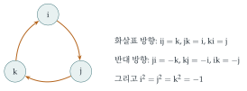

STEP III 1993, 문제 5
계속 읽기 전에 문제를 먼저 읽어 보자. 문제는 STEP Support Programme의 문제 데이터베이스에 있다: step.maths.org/questions/93-s3-q5
도입
1843년 10월 16일, 윌리엄 로언 해밀턴(William Rowan Hamilton)은 아내와 함께 더블린의 로열 운하를 따라 걷다가, 여러 해 동안 좇던 영감을 번뜩 얻었다. 그는 복소수(complex numbers)가 수의 쌍을 곱하듯이 수의 세 쌍을 곱하는 방법을 찾으려 했지만 번번이 실패했다. 그런데 갑자기 답이 보였다. 수가 네 개 필요하고, 곱하는 순서가 중요한 곱셈, 즉 \(ij \neq ji\)인 곱셈이 필요하다는 것이었다. 그는 브룸 다리(Brougham Bridge)의 돌에 다음 규칙을 새겼다. \[\mathrm{i}^2 = \mathrm{j}^2 = \mathrm{k}^2 = \mathrm{ijk} = -1.\] 이것이 바로 사원수(quaternions)이다. 이 문제는 복소수의 쌍으로 사원수를 만들고, 그 안에서 뒤틀린 곱셈을 가진 원소 여덟 개짜리 작은 군을 찾아낸다. 오늘날 사원수는 모든 컴퓨터 게임, 비행 시뮬레이터, 우주선 유도 장치에서 3차원 회전을 기술하는 데 쓰인다.
시작하기 전에
군의 정의는 6.6 절를 보라. 용어 두 가지를 더 알아 두자. 군(group)의 원소 \(g\)의 위수(order)는 \(g^n = e\)를 만족하는 가장 작은 양의 정수 \(n\)이다. 그리고 두 군 사이에 연산을 보존하는 일대일 대응(one-to-one correspondence)이 있으면 두 군은 동형(isomorphic)이라고 한다. 즉 두 군은 “이름표만 다른 같은 군”이다.
쌍 \((z_1, z_2)\)를 “수” \(z_1 + z_2\mathrm{j}\)를 나타내는 것으로 생각하자. 여기서 \(\mathrm{j}\)는 \(\mathrm{j}^2 = -1\)이고 복소수 \(w\)에 대하여 \(\mathrm{j}w = w^*\mathrm{j}\)를 만족하는 새로운 기호이다. 이 규칙을 써서 \((z_1 + z_2\mathrm{j})(w_1 + w_2\mathrm{j})\)를 곱해 보라. \(\circ\)의 공식이 나오는가?
\((z_1 + z_2\mathrm{j})(w_1 + w_2\mathrm{j}) = z_1w_1 + z_1w_2\mathrm{j} + z_2\mathrm{j}w_1 + z_2\mathrm{j}w_2\mathrm{j} = z_1w_1 + z_1w_2\mathrm{j} + z_2w_1^*\mathrm{j} + z_2w_2^*\mathrm{j}^2\)이고, 이는 \((z_1w_1 - z_2w_2^*) + (z_1w_2 + z_2w_1^*)\mathrm{j}\)이다. 그렇다. 연산 \(\circ\)는 변장한 사원수 곱셈이다.
차근차근 풀기
단계 1 행렬을 이용한 결합법칙
\((a \circ b) \circ c = a \circ (b \circ c)\)를 직접 확인하려면 계산이 길다. 더 깔끔한 방법이 있다.
\((z_1, z_2)\)에 복소 행렬 \(M = \begin{pmatrix} z_1 & z_2 \\ -z_2^* & z_1^* \end{pmatrix}\)를 대응시키자. 행렬의 곱 \(M(z_1, z_2)\,M(w_1, w_2)\)의 첫째 행은 무엇인가?
곱의 첫째 행은 \(\bigl(z_1w_1 - z_2w_2^*,\ z_1w_2 + z_2w_1^*\bigr)\)로 정확히 \((z_1, z_2)\circ(w_1, w_2)\)이고, 둘째 행은 \(\bigl(-(z_1w_2 + z_2w_1^*)^*,\ (z_1w_1 - z_2w_2^*)^*\bigr)\)이므로 곱도 같은 특수한 꼴이다. 따라서 \(M(a \circ b) = M(a)M(b)\)이다. 행렬의 곱셈은 결합법칙을 만족하고, \(M\)은 일대일이므로(첫째 행에서 \(z_1\), \(z_2\)를 읽어 낼 수 있다) \(\circ\)는 결합법칙(associativity)을 만족한다.■
단계 2 교환법칙이 성립하지 않음
\((0, 1)\circ(\mathrm{i}, 0) = (0 \cdot \mathrm{i} - 1 \cdot 0,\ 0 \cdot 0 + 1 \cdot \mathrm{i}^*) = (0, -\mathrm{i})\)이지만 \((\mathrm{i}, 0)\circ(0, 1) = (0, \mathrm{i})\)이다. 따라서 \(\circ\)는 교환법칙(commutative law)을 만족하지 않는다.
네 가지 특수한 곱은 정의에서 바로 나온다. \[\begin{aligned} (z, 0)\circ(w, 0) &= (zw, 0), & (z, 0)\circ(0, w) &= (0, zw), \\ (0, z)\circ(w, 0) &= (0, zw^*), & (0, z)\circ(0, w) &= (-zw^*, 0). \end{aligned}\]
단계 3 원소 여덟 개의 군
사원수 표기로 쓰면 \(A = 1\), \(C = \mathrm{i}\), \(B = \mathrm{j}\), \(D = \mathrm{i}\mathrm{j} = \mathrm{k}\)이고, \(E, G, F, H\)는 각각 이들의 음수이다. \(S_1\)의 모든 원소는 \(u \in \{1, \mathrm{i}, -1, -\mathrm{i}\}\)에 대하여 \((u, 0)\) 또는 \((0, u)\) 꼴이다.
네 가지 특수한 곱을 이용하여 \(S_1\)이 닫혀 있음을 보여라. 항등원은 무엇인가?
네 가지 특수한 곱에 의해, \((u, 0)\) 또는 \((0, u)\) 꼴인 두 원소의 곱은 다시 이 두 꼴 가운데 하나이고, 그 첫째 또는 둘째 성분은 \(uv\), \(uv^*\) 또는 \(-uv^*\)이다. \(\{1, \mathrm{i}, -1, -\mathrm{i}\}\)는 곱셈, 켤레(conjugation), 부호 바꾸기에 대하여 닫혀 있으므로(closed), 그 곱은 \(S_1\)에 속한다. 항등원(identity)은 \(A = (1, 0)\)이다. \((1, 0)\circ(w_1, w_2) = (w_1, w_2)\)이고 \((w_1, w_2)\circ(1, 0) = (w_1, w_2)\)이기 때문이다.
각 원소의 위수와 역원을 구하라.
\(A\)의 위수는 \(1\)이다. \(E\circ E = (-1, 0)\circ(-1, 0) = (1, 0)\)이므로 \(E\)의 위수는 \(2\)이다. \(C = (\mathrm{i}, 0)\)에 대하여 \(C\circ C = (-1, 0) = E\)이므로 \(C\)의 위수는 \(4\)이고 \(C^{-1} = C^3 = E\circ C = G\)이다. \(B = (0, 1)\)에 대하여 \(B\circ B = (-1 \cdot 1^*, 0) = (-1, 0) = E\)이므로 \(B\)의 위수는 \(4\)이고 \(B^{-1} = F\)이다. 마찬가지로 \(D\circ D = (-\mathrm{i}\cdot\mathrm{i}^*, 0) = (-\mathrm{i}\cdot(-\mathrm{i}), 0) = (-1, 0) = E\)이므로 \(D\)의 위수는 \(4\)이고 역원은 \(H\)이다. 그리고 \(G\), \(F\), \(H\)는 \(C\), \(B\), \(D\)의 역원(inverse)이며 위수는 역시 \(4\)이다. 정리하면 다음과 같다.
| 원소 | \(A\) | \(B\) | \(C\) | \(D\) | \(E\) | \(F\) | \(G\) | \(H\) |
|---|---|---|---|---|---|---|---|---|
| 역원 | \(A\) | \(F\) | \(G\) | \(H\) | \(E\) | \(B\) | \(C\) | \(D\) |
| 위수 | \(1\) | \(4\) | \(4\) | \(4\) | \(2\) | \(4\) | \(4\) | \(4\) |
닫혀 있고, 결합법칙(1단계)을 만족하며, 항등원과 역원이 있으므로 \(S_1\)은 군이다.■ 이 군을 사원수군(quaternion group) \(Q_8\)이라고 한다.
단계 4 부분군
\(\{A, B, E, F\} = \{1, \mathrm{j}, -1, -\mathrm{j}\}\)는 \(B\)의 거듭제곱으로 이루어져 있다. \(B^1 = B\), \(B^2 = E\), \(B^3 = F\), \(B^4 = A\)이다. 따라서 이 집합은 닫혀 있고 역원을 포함하므로 부분군(subgroup)이며, 위수가 \(4\)인 순환군(cyclic group)이다. 행렬 \(J = \begin{pmatrix} 0 & 1 \\ -1 & 0 \end{pmatrix}\)는 \(J^2 = -I\), \(J^3 = -J\), \(J^4 = I\)를 만족하므로 역시 위수가 \(4\)인 순환군을 생성한다. \(B^k \leftrightarrow J^k\)로 대응시키면 동형사상이 된다.■ (사실 \(J\)는 정확히 \(M(0, 1)\), 즉 \(B\)의 행렬이다.)
돌아보기
행렬로 표현하라. 직접 확인하기 고통스러운 결합법칙을 행렬 곱셈으로부터 물려받았다.
공식 뒤에 숨은 구조를 찾아라. 낯선 연산 \(\circ\)는 사원수 곱셈이었고, 이를 알아차리자 모든 것이 쉬워졌다.
위수와 역원은 군을 묘사한다. 위수 표만 보아도 \(Q_8\)이 특이하다는 것을 알 수 있다. 위수가 \(2\)인 원소는 하나뿐이고 위수가 \(4\)인 원소는 여섯 개이다.
숨은 수학
실수는 덧셈, 곱셈, 나눗셈을 할 수 있는 1차원 수 체계를 이루고, 복소수는 2차원 수 체계를 이룬다. 해밀턴의 사원수는 4차원이며 여전히 나눗셈을 할 수 있지만, 곱셈은 더 이상 교환법칙을 만족하지 않는다(그림 6.7.1). 1878년 프로베니우스(Ferdinand Frobenius)는 \(\mathbb{R}\), \(\mathbb{C}\), \(\mathbb{H}\)(해밀턴의 머리글자) 이 세 가지가 실수 위의 유한 차원 “나눗셈 대수”(division algebra) 가운데 곱셈이 결합법칙을 만족하는 유일한 것임을 증명했다. 결합법칙을 포기하되, 실수, 복소수, 사원수에서처럼 크기가 곱셈적인 성질 \(|xy| = |x|\,|y|\)를 유지하면 정확히 하나가 더 있다. 1840년대에 John Graves와 케일리(Arthur Cayley)가 발견한 8차원의 팔원수(octonions)이다. 1898년 후르비츠(Adolf Hurwitz)는 이 네 가지가 그러한 체계의 전부임을 증명했다. (크기에 대한 조건을 빼면 이보다 더 기묘한 비결합 나눗셈 대수가 또 있지만, 보트(Raoul Bott), 밀너(John Milnor), 케르베르(Michel Kervaire)가 1958년에 증명한 깊은 정리에 따르면 모든 유한 차원 실수 나눗셈 대수의 차원은 \(1\), \(2\), \(4\), \(8\) 중 하나이다.)

3차원의 회전
절댓값이 \(1\)인 사원수는 3차원 공간의 회전을 나타낸다. 단위 축 \(\mathbf{u}\)를 중심으로 각 \(\theta\)만큼 회전하는 것은 \(q = \cos\frac\theta2 + \sin\frac\theta2(u_1\mathrm{i} + u_2\mathrm{j} + u_3\mathrm{k})\)에 대응하고, 이는 벡터 \(\mathbf{v}\)(\(v_1\mathrm{i} + v_2\mathrm{j} + v_3\mathrm{k}\)로 쓴다)에 \(\mathbf{v} \mapsto q\mathbf{v}q^{-1}\)로 작용한다. 회전을 합성하는 것은 사원수를 곱하는 것이다. 이 방법은 행렬이나 각을 쓰는 것보다 효율적이고 수치적으로 안정적이며, “짐벌 잠금”(gimbal lock)을 피할 수 있다. 짐벌 잠금은 자유도 하나를 잃는 현상으로, 아폴로 우주비행사들은 자이로스코프 기반 항법 장치를 쓰면서 이 문제를 피해 가야 했다. 반각 \(\frac\theta2\)는 깊은 사실에 대한 단서이기도 하다. \(360^\circ\)만큼 회전하면 \(1\)이 아니라 \(q = -1\)이 되는데, 물리학자들은 이 사실을 전자의 행동(스핀(spin))에서 관찰한다.
네 제곱수
사원수의 절댓값은 복소수의 절댓값과 마찬가지로 곱셈적이다. 즉 \(|pq| = |p||q|\)이다. 이를 풀어 쓰면 오일러(Euler)의 네 제곱수 항등식(four-square identity)을 얻는다. 네 제곱수의 합 두 개의 곱은 그 자체로 네 제곱수의 합이라는 것이다. 이는 모든 양의 정수가 네 제곱수의 합이라는 라그랑주(Lagrange)의 정리에서 핵심 단계이다. 이 정리는 7.8 절에서 증명하며, 1.6 절의 두 제곱수 결과의 4차원 사촌이다.
사고 기술
추상적인 연산을 다루기 어렵다면, 그 연산이 익숙한 연산이 되는 행렬 같은 구체적인 모형을 찾아라.
그러면 결합법칙 같은 성질은 저절로 따라온다. 군을 행렬로 표현하여 연구한다는 이 아이디어는 표현론(representation theory)이라는 크고 아름다운 분야로 자라난다.
더 도전하기
해밀턴의 규칙. 쌍을 이용하여 \(C\circ B = D\)이고 \(B\circ C = H\)임을, 즉 \(\mathrm{ij} = \mathrm{k}\)이고 \(\mathrm{ji} = -\mathrm{k}\)임을 확인하라.
위수가 \(2\)인 원소는 하나뿐. \(Q_8\)에서 위수가 \(2\)인 원소는 \(E = -1\)뿐임을 보여라. 이로부터 \(Q_8\)이 정사각형의 대칭군(위수가 \(2\)인 원소가 다섯 개이다)과 동형이 아님을 보여라.
네 제곱수. \(\det M(z_1, z_2) = |z_1|^2 + |z_2|^2\)임을 보여라. \(\det(M_1M_2) = \det M_1\det M_2\)를 이용하여, 네 제곱수의 합 두 개의 곱이 네 제곱수의 합임을 보여라.
부분군. \(Q_8\)의 부분군을 모두 구하라. \(\{A\}\)가 아닌 모든 부분군은 \(E\)를 포함함을 보이고, \(Q_8\)이 위수가 \(4\)인 세 순환 부분군의 합집합임을 보여라(6.6 절와 비교해 보라).
더 읽을거리
John Conway & Derek Smith, On Quaternions and Octonions (A. K. Peters). 사원수와 팔원수의 기하학과 산술을 다룬다. 수준이 높지만 매혹적이다.
John Baez, “The octonions”, Bulletin of the American Mathematical Society 39 (2002); 온라인에서 무료로 볼 수도 있다. 훌륭한 개관 논문이며, 서론은 지금 읽어도 이해할 수 있다.
Andrew Hanson, Visualizing Quaternions (Morgan Kaufmann). 회전을 위한 사원수를 그래픽스 응용과 함께 다룬다.